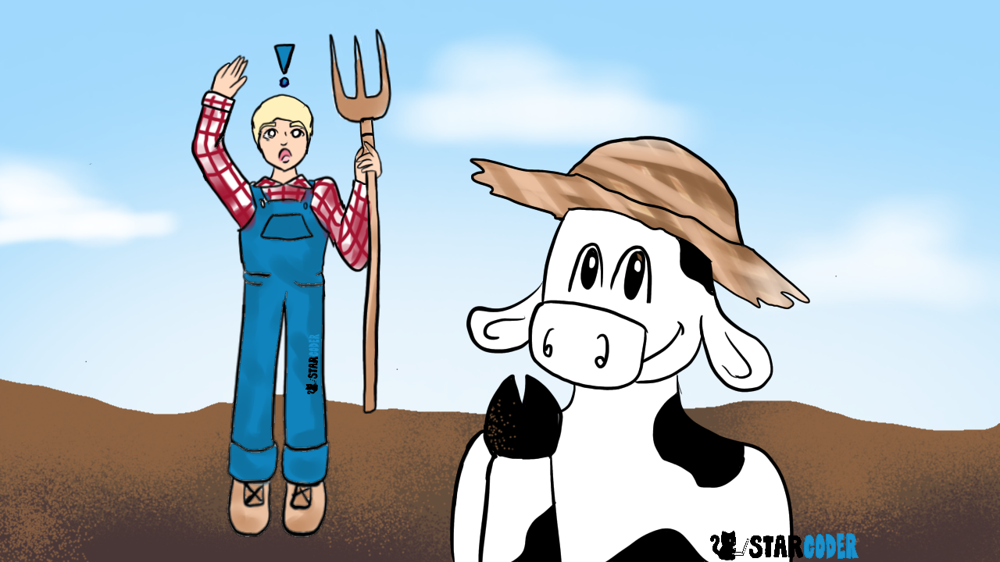
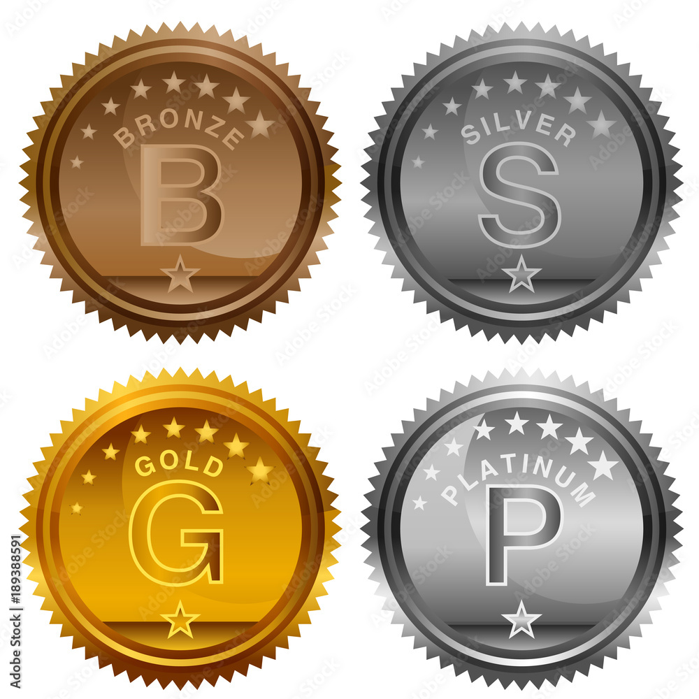

Next Steps
To students, parents, and teachers,
Thank you for trusting and using my product. The next few resources do a
great job
of completing your competitive coding journey. Codepetitor is only the first chapter of a long story.

CodingBat
My recommendation is to go to a website called CodingBat to do their problems. This is a great website
that offers problems that require similar skill to the ones from lessons 7-9.
This will continue to allow for great problem solving practice and refine your
critical thinking skills.
There may be some problem you know how to solve but can't figure out what code will do what you want.
If you need help with this look at Codeacademcy, do Codepetitor lessons, or
other online resources.
CodingBat
USACO
After some more practice, I'd suggest you look into the big boy. USACO. For more on USACO, look here.
Essentially, it's the largest
competitive coding contest in America for students who haven't graduated high school.
There are four levels: Bronze, Silver, Gold, and Platinum. Everyone starts at bronze. Each month
from December-March, there's a contest. Within the contest, you do the level you are in. You will
be stuck in bronze for a while so don't worry. Be patient!
Fun fact: Every question in USACO is about Farmer John and his cows.

After you master codingbat, I strongly suggest you get started with the USACO Guide. Start slow, and don't do all at once. Everytime you learn a section, do some practice problems from sources I show you below. I think the hardest part is the input output part. It's very confusing so focus on that. You will also have to learn about the "Main header" I was talking about in the first lesson. It's not a big deal but try to familiarize yourself with this style of document. Reach out to me if you need help and I'll make a tutorial. USACO Guide
Along with the USACO guide, you can use the USACO training page. It's a bit outdated but can complement the USACO guide well. USACO Training
On USACO, there's a collection of all the past years contests. I suggest that after you complete for example, the "bronze" section of the USACO Guide, you work on the Bronze problems from the past years. For the other levels, do the same thing. These will take time so be patient! 
Competitions! Do competitions whenever you have the chance to. USACO is the best contest but also look at
Codeforces.
Practice makes perfect!
Classes
Also, given the chance, take general classes, such as an JAVA/C++/AP CS A. They are more project oriented and have a bigger focus on technical skills.
Final Words
Keep grinding. Participate in USACO competitions and keep on looking for ways to expand your journey! Be
patient! It'll take time.
Good
Luck! I'm proud of you! Also keep liking Disney, even where your old!